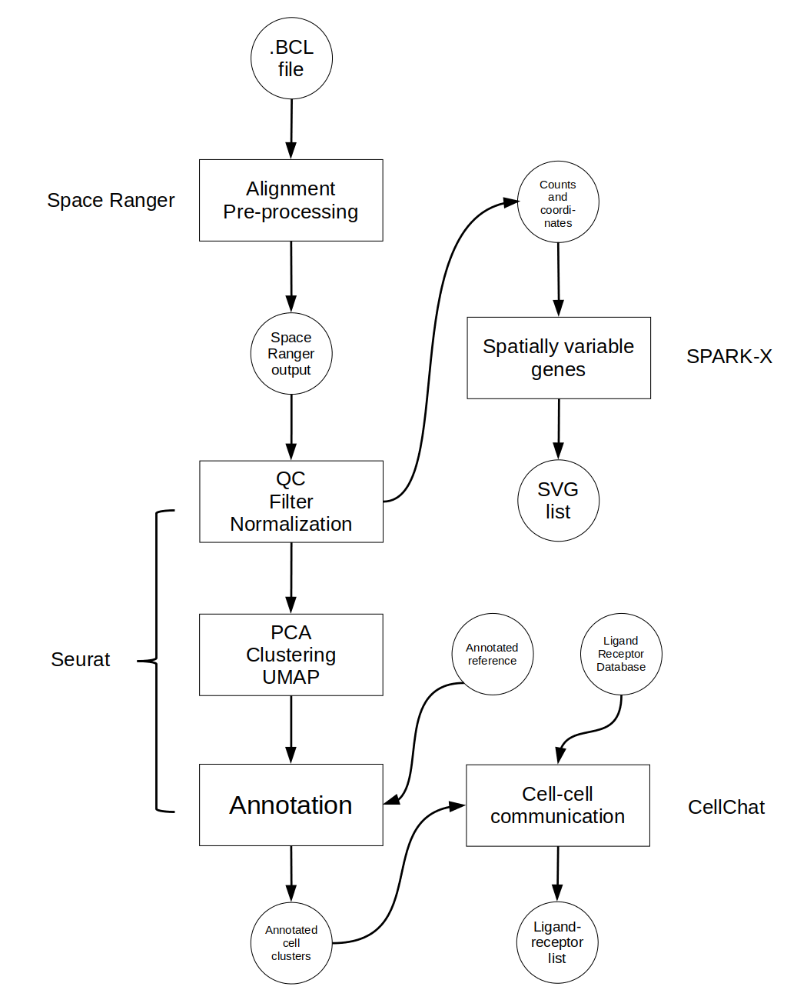

Chapter 2 Introduction
As biological technologies continue to advance, analysis methods that bring novel insight to the field are rapidly developing, including new ways to use already familiar techniques. RNA sequencing (RNA-seq) began with bulk methods that averaged expression across a sample. The next iteration used dissociation to disrupt tissue into single cells that could be sequenced individually (single-cell RNA-seq; scRNA-seq) to inform which genes were expressed in tandem in the same cell. Most recently, spatial information has been added to the analysis so now gene expression across a tissue sample can be reconstructed to give a 2D (or even 3D) picture. This new field is called spatial transcriptomics (ST).
ST analysis has a wide variety of applications. Starting at the sub-cellular level, imaging methods are able to localize RNA to specific parts of a cell to illuminate the structured handling of gene expression. At the cellular level, the distance between cells and the expression of ligand-receptor pairs are used to predict possible cell communication with greater accuracy. Finally, tissue-level datasets can inform the cellular makeup of a tumor sample or allow us to create a highly detailed tissue atlas with incredible resolution.
There are several methods for capturing RNA expression and spatial information from a tissue sample, one of the more popular options being 10X Genomics’ Visium platform. The Visium platform allows for capture of close to single-cell resolution whole transcriptome RNA-seq data while also noting the spatial position of cells in a tissue. Briefly, fresh frozen or formalin-fixed paraffin-embedded (FFPE) samples are fixed to a slide and stained with immunofluorescent (IF) markers or Hematoxylin and Eosin (H&E) stain before the slide is imaged. Tissue on the slide is then hybridized with whole-transcriptome probes and the slide is placed into a 10X Genomics CytAssist machine where areas of the tissue are captured and sequenced. Genomics’ Space Ranger software then converts raw data into an expression matrix and spatial coordinates. This platform is currently a popular choice and therefore this protocol will focus on analyzing data collected this way.
Although ST analysis pipelines may involve numerous steps, this chapter highlights three core components that are consistently implemented in widely used workflows.. The first is clustering which uses spatial and RNA-seq data to group sequencing spots by common gene expression profiles. These clusters can then inform tissue architecture and be used for spatial domain prediction. Next, spatially variable gene expression detection highlights which genes may vary in expression by location revealing structural domains or tissue heterogeneity. Cell-cell communication allows for the prediction of communication networks across a sample by assessing the distance between expression of ligand-receptor pairs in cells.
This protocol will focus on ST analysis with the three steps mentioned above. The software used at each step is one of a myriad of options and was chosen for ideal dataflow and ease of use. All are available as R packages therefore a familiarity with basic R functionality such as installing and loading R packages, handling R datatypes, and loading and saving data in R is advised.
2.1 General Workflow
The figure below shows the general workflow of this pipeline along with the software for each step. The workflow is presented linearly here although the steps after clustering may be done in any order and several are optional depending on the desired analysis.

## R version 4.4.3 (2025-02-28)
## Platform: x86_64-pc-linux-gnu
## Running under: Linux Mint 21
##
## Matrix products: default
## BLAS: /usr/lib/x86_64-linux-gnu/blas/libblas.so.3.10.0
## LAPACK: /usr/lib/x86_64-linux-gnu/lapack/liblapack.so.3.10.0
##
## locale:
## [1] LC_CTYPE=en_US.UTF-8 LC_NUMERIC=C
## [3] LC_TIME=en_US.UTF-8 LC_COLLATE=en_US.UTF-8
## [5] LC_MONETARY=en_US.UTF-8 LC_MESSAGES=en_US.UTF-8
## [7] LC_PAPER=en_US.UTF-8 LC_NAME=C
## [9] LC_ADDRESS=C LC_TELEPHONE=C
## [11] LC_MEASUREMENT=en_US.UTF-8 LC_IDENTIFICATION=C
##
## time zone: America/New_York
## tzcode source: system (glibc)
##
## attached base packages:
## [1] stats graphics grDevices utils datasets methods base
##
## loaded via a namespace (and not attached):
## [1] digest_0.6.37 R6_2.6.1 bookdown_0.42 fastmap_1.2.0
## [5] xfun_0.51 cachem_1.1.0 knitr_1.49 htmltools_0.5.8.1
## [9] rmarkdown_2.29 lifecycle_1.0.4 cli_3.6.4 sass_0.4.9
## [13] jquerylib_0.1.4 compiler_4.4.3 rstudioapi_0.17.1 tools_4.4.3
## [17] evaluate_1.0.3 bslib_0.9.0 yaml_2.3.10 jsonlite_1.9.0
## [21] rlang_1.1.5